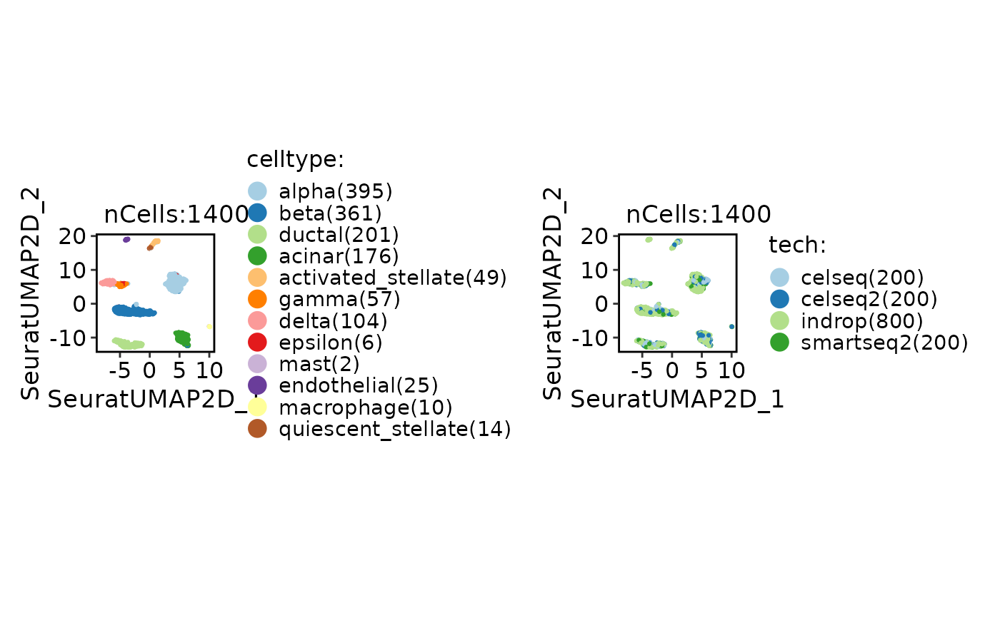
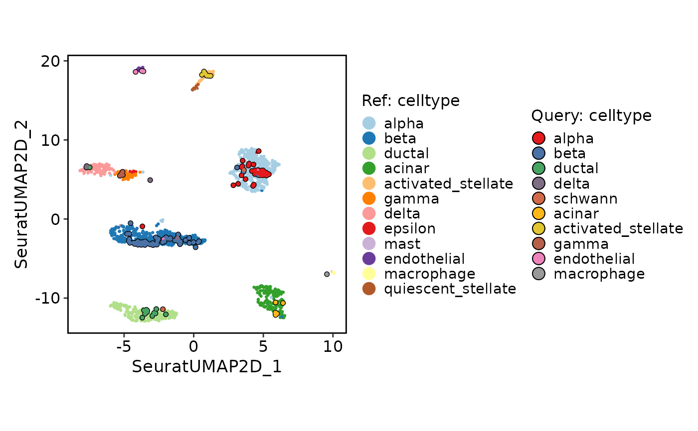

This function generates a projection plot, which can be used to compare two groups of cells in a dimensionality reduction space.
Usage
ProjectionPlot(
srt_query,
srt_ref,
query_group = NULL,
ref_group = NULL,
query_reduction = "ref.embeddings",
ref_reduction = srt_query[[query_reduction]]@misc[["reduction.model"]] %||% NULL,
query_param = list(palette = "Set1", cells.highlight = TRUE),
ref_param = list(palette = "Paired"),
xlim = NULL,
ylim = NULL,
pt.size = 0.8,
stroke.highlight = 0.5
)Arguments
- srt_query
An object of class Seurat storing the query group cells.
- srt_ref
An object of class Seurat storing the reference group cells.
- query_group
The grouping variable for the query group cells.
- ref_group
The grouping variable for the reference group cells.
- query_reduction
The name of the reduction in the query group cells.
- ref_reduction
The name of the reduction in the reference group cells.
- query_param
A list of parameters for customizing the query group plot. Available parameters: palette (color palette for groups) and cells.highlight (whether to highlight cells).
- ref_param
A list of parameters for customizing the reference group plot. Available parameters: palette (color palette for groups) and cells.highlight (whether to highlight cells).
- xlim
The x-axis limits for the plot. If not provided, the limits will be calculated based on the data.
- ylim
The y-axis limits for the plot. If not provided, the limits will be calculated based on the data.
- pt.size
The size of the points in the plot.
- stroke.highlight
The size of the stroke highlight for cells.
Examples
data("panc8_sub")
srt_ref <- panc8_sub[, panc8_sub$tech != "fluidigmc1"]
srt_query <- panc8_sub[, panc8_sub$tech == "fluidigmc1"]
srt_ref <- Integration_SCP(srt_ref, batch = "tech", integration_method = "Seurat")
#> [2025-09-08 15:00:01.95351] Start Seurat_integrate
#> [2025-09-08 15:00:01.959264] Spliting srtMerge into srtList by column tech... ...
#> [2025-09-08 15:00:02.119419] Checking srtList... ...
#> Data 1/4 of the srtList is raw_normalized_counts. Perform NormalizeData(LogNormalize) on the data ...
#> Perform FindVariableFeatures on the data 1/4 of the srtList...
#> Data 2/4 of the srtList is raw_normalized_counts. Perform NormalizeData(LogNormalize) on the data ...
#> Perform FindVariableFeatures on the data 2/4 of the srtList...
#> Data 3/4 of the srtList is raw_counts. Perform NormalizeData(LogNormalize) on the data ...
#> Perform FindVariableFeatures on the data 3/4 of the srtList...
#> Data 4/4 of the srtList is raw_counts. Perform NormalizeData(LogNormalize) on the data ...
#> Perform FindVariableFeatures on the data 4/4 of the srtList...
#> Use the separate HVF from srtList...
#> Number of available HVF: 2000
#> [2025-09-08 15:00:04.489532] Finished checking.
#> [2025-09-08 15:00:05.002596] Perform FindIntegrationAnchors on the data...
#> [2025-09-08 15:00:17.697355] Perform integration(Seurat) on the data...
#> Warning: Layer counts isn't present in the assay object; returning NULL
#> Warning: Layer counts isn't present in the assay object; returning NULL
#> Warning: Layer counts isn't present in the assay object; returning NULL
#> [2025-09-08 15:00:21.931729] Perform ScaleData on the data...
#> [2025-09-08 15:00:23.265835] Perform linear dimension reduction (pca) on the data...
#> Warning: The following arguments are not used: force.recalc
#> Warning: The following arguments are not used: force.recalc
#> [2025-09-08 15:00:24.019291] Perform FindClusters (louvain) on the data...
#> [2025-09-08 15:00:24.12332] Reorder clusters...
#> [2025-09-08 15:00:24.187323] Perform nonlinear dimension reduction (umap) on the data...
#> Non-linear dimensionality reduction(umap) using Reduction(Seuratpca, dims:1-11) as input
#> Non-linear dimensionality reduction(umap) using Reduction(Seuratpca, dims:1-11) as input
#> [2025-09-08 15:00:33.087583] Seurat_integrate done
#> Elapsed time: 31.13 secs
CellDimPlot(srt_ref, group.by = c("celltype", "tech"))
#> Warning: No shared levels found between `names(values)` of the manual scale and the data's fill values.
#> Warning: No shared levels found between `names(values)` of the manual scale and the data's fill values.

# Projection
srt_query <- RunKNNMap(srt_query = srt_query, srt_ref = srt_ref, ref_umap = "SeuratUMAP2D")
#> Use the features to calculate distance metric.
#> Detected srt_query data type: raw_normalized_counts
#> Detected srt_ref data type: log_normalized_counts
#> Warning: Data type is unknown or different between srt_query and srt_ref.
#> Use 648 features to calculate distance.
#> Use 'raw' method to find neighbors.
#> Running UMAP projection
#> 15:00:34 Read 200 rows
#> 15:00:34 Processing block 1 of 1
#> 15:00:34 Commencing smooth kNN distance calibration using 2 threads
#> with target n_neighbors = 30
#> 15:00:34 Initializing by weighted average of neighbor coordinates using 2 threads
#> 15:00:34 Commencing optimization for 200 epochs, with 6000 positive edges
#> 15:00:34 Finished
ProjectionPlot(srt_query = srt_query, srt_ref = srt_ref, query_group = "celltype", ref_group = "celltype")
#> Warning: No shared levels found between `names(values)` of the manual scale and the data's fill values.
#> Scale for x is already present.
#> Adding another scale for x, which will replace the existing scale.
#> Scale for y is already present.
#> Adding another scale for y, which will replace the existing scale.
#> Warning: No shared levels found between `names(values)` of the manual scale and the data's fill values.
#> Warning: No shared levels found between `names(values)` of the manual scale and the data's fill values.
#> Warning: No shared levels found between `names(values)` of the manual scale and the data's fill values.
